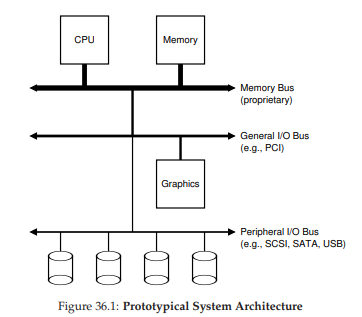
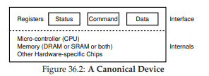
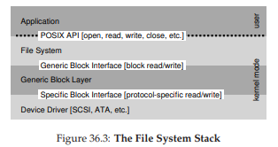
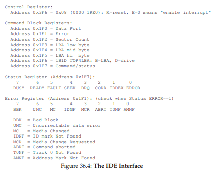
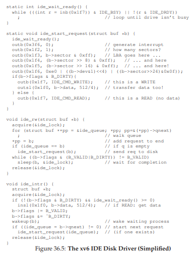

36 Thiết bị I/O (I/O Devices)
Trước khi đi sâu vào nội dung chính của phần này (về persistence – tính bền vững dữ liệu), trước hết chúng ta sẽ giới thiệu khái niệm thiết bị nhập/xuất (input/output – I/O device) và xem hệ điều hành (operating system) có thể tương tác với thực thể này như thế nào.
I/O tất nhiên là cực kỳ quan trọng đối với hệ thống máy tính; hãy tưởng tượng một chương trình không có bất kỳ input nào (nó sẽ cho ra cùng một kết quả mỗi lần chạy); giờ hãy tưởng tượng một chương trình không có output (vậy mục đích chạy nó là gì?). Rõ ràng, để hệ thống máy tính trở nên hữu ích, cả input và output đều là cần thiết. Và do đó, chúng ta có vấn đề tổng quát sau:
THE CRUX: LÀM THẾ NÀO ĐỂ TÍCH HỢP I/O VÀO HỆ THỐNG
Làm thế nào để tích hợp I/O vào hệ thống? Các cơ chế tổng quát là gì? Làm thế nào để chúng ta khiến chúng hoạt động hiệu quả?
36.1 Kiến trúc hệ thống (System Architecture)
Để bắt đầu, hãy xem một sơ đồ “kinh điển” của một hệ thống điển hình (Hình 36.1). Sơ đồ cho thấy một CPU đơn được kết nối với bộ nhớ chính (main memory) của hệ thống thông qua một loại memory bus hoặc interconnect nào đó. Một số thiết bị được kết nối với hệ thống thông qua một I/O bus tổng quát, mà trong nhiều hệ thống hiện đại sẽ là PCI (hoặc một trong nhiều biến thể của nó); card đồ họa và một số thiết bị I/O hiệu năng cao khác thường nằm ở đây. Cuối cùng, ở mức thấp hơn là một hoặc nhiều peripheral bus (bus ngoại vi), chẳng hạn như SCSI, SATA hoặc USB. Các bus này kết nối các thiết bị chậm với hệ thống, bao gồm đĩa cứng, chuột và bàn phím.

Hình 36.1: Kiến trúc hệ thống nguyên mẫu (Prototypical System Architecture)
Một câu hỏi đặt ra: tại sao chúng ta cần một cấu trúc phân cấp như vậy? Nói ngắn gọn: vật lý và chi phí. Bus càng nhanh thì chiều dài của nó càng phải ngắn; do đó, một memory bus hiệu năng cao không có nhiều chỗ để cắm thêm thiết bị. Ngoài ra, việc thiết kế một bus hiệu năng cao là rất tốn kém. Vì vậy, các nhà thiết kế hệ thống đã áp dụng cách tiếp cận phân cấp này, trong đó các thành phần đòi hỏi hiệu năng cao (như card đồ họa) được đặt gần CPU hơn. Các thành phần hiệu năng thấp hơn được đặt xa hơn. Lợi ích của việc đặt đĩa và các thiết bị chậm khác trên peripheral bus là rất nhiều; đặc biệt, bạn có thể kết nối số lượng lớn thiết bị vào đó.
Tất nhiên, các hệ thống hiện đại ngày càng sử dụng chipset chuyên dụng và các kết nối point-to-point nhanh hơn để cải thiện hiệu năng. Hình 36.2 cho thấy sơ đồ gần đúng của Intel Z270 Chipset [H17]. Ở phía trên, CPU kết nối trực tiếp nhất với hệ thống bộ nhớ, nhưng cũng có một kết nối hiệu năng cao tới card đồ họa (và do đó là màn hình) để hỗ trợ chơi game (ồ, thật khủng khiếp!) và các ứng dụng đòi hỏi đồ họa cao.

Hình 36.2: Kiến trúc hệ thống hiện đại (Modern System Architecture)
CPU kết nối với một chip I/O thông qua DMI (Direct Media Interface) độc quyền của Intel, và phần còn lại của các thiết bị kết nối với chip này thông qua nhiều loại interconnect khác nhau. Ở bên phải, một hoặc nhiều ổ cứng kết nối với hệ thống qua giao diện eSATA; ATA (AT Attachment – kết nối cho máy IBM PC AT), sau đó là SATA (Serial ATA), và hiện nay là eSATA (external SATA) thể hiện sự tiến hóa của các giao diện lưu trữ trong nhiều thập kỷ qua, với mỗi bước tiến đều tăng hiệu năng để bắt kịp với các thiết bị lưu trữ hiện đại. Bên dưới chip I/O là một số kết nối USB (Universal Serial Bus), trong sơ đồ này dùng để kết nối bàn phím và chuột với máy tính. Trong nhiều hệ thống hiện đại, USB được dùng cho các thiết bị hiệu năng thấp như vậy. Cuối cùng, ở bên trái, các thiết bị hiệu năng cao khác có thể được kết nối với hệ thống qua PCIe (Peripheral Component Interconnect Express). Trong sơ đồ này, một network interface (giao diện mạng) được kết nối tại đây; các thiết bị lưu trữ hiệu năng cao hơn (như thiết bị lưu trữ bền vững NVMe) cũng thường được kết nối tại đây.
36.2 Một thiết bị chuẩn (A Canonical Device)
Bây giờ, hãy xem xét một thiết bị chuẩn (không phải thiết bị thực), và sử dụng nó để tìm hiểu một số cơ chế cần thiết nhằm làm cho việc tương tác với thiết bị trở nên hiệu quả. Từ Hình 36.3, ta thấy một thiết bị có hai thành phần quan trọng:
- Giao diện phần cứng (hardware interface) mà nó cung cấp cho phần còn lại của hệ thống. Giống như một phần mềm, phần cứng cũng phải cung cấp một loại giao diện nào đó cho phép phần mềm hệ thống điều khiển hoạt động của nó. Do đó, tất cả các thiết bị đều có một giao diện và giao thức (protocol) được xác định để tương tác điển hình.

Hình 36.3: Một thiết bị chuẩn (A Canonical Device)
- Cấu trúc bên trong (internal structure) của thiết bị. Phần này phụ thuộc vào cách triển khai và chịu trách nhiệm hiện thực hóa abstraction (sự trừu tượng hóa) mà thiết bị cung cấp cho hệ thống. Các thiết bị rất đơn giản sẽ chỉ có một hoặc vài chip phần cứng để thực hiện chức năng của chúng; các thiết bị phức tạp hơn sẽ bao gồm một CPU đơn giản, một số bộ nhớ đa dụng (general purpose memory), và các chip chuyên biệt khác để hoàn thành công việc. Ví dụ, các bộ điều khiển RAID hiện đại có thể bao gồm hàng trăm nghìn dòng firmware (phần mềm nằm trong thiết bị phần cứng) để thực hiện chức năng của chúng.
36.3 Giao thức chuẩn (The Canonical Protocol)
Trong sơ đồ trên, giao diện thiết bị (được đơn giản hóa) bao gồm ba register:
- Status register: có thể đọc để biết trạng thái hiện tại của thiết bị.
- Command register: dùng để ra lệnh cho thiết bị thực hiện một tác vụ nhất định.
- Data register: dùng để truyền dữ liệu tới thiết bị hoặc nhận dữ liệu từ thiết bị.
Bằng cách đọc và ghi vào các register này, hệ điều hành có thể điều khiển hành vi của thiết bị.
Bây giờ, hãy mô tả một tương tác điển hình mà hệ điều hành (OS) có thể thực hiện với thiết bị để yêu cầu thiết bị làm một việc nào đó thay cho nó. Giao thức (protocol) như sau:
While (STATUS == BUSY)
; // chờ cho đến khi thiết bị không bận
Write data to DATA register
Write command to COMMAND register
// (bắt đầu thiết bị và thực thi lệnh)
While (STATUS == BUSY)
; // chờ cho đến khi thiết bị hoàn thành yêu cầu
Giao thức này có bốn bước:
- OS chờ cho đến khi thiết bị sẵn sàng nhận lệnh bằng cách liên tục đọc status register; chúng ta gọi đây là polling thiết bị (về cơ bản là liên tục hỏi xem nó đang làm gì).
- OS gửi một số dữ liệu xuống data register; có thể hình dung nếu đây là một ổ đĩa, thì sẽ cần nhiều lần ghi để truyền một khối dữ liệu (ví dụ 4KB) xuống thiết bị. Khi CPU chính tham gia trực tiếp vào việc di chuyển dữ liệu (như trong giao thức ví dụ này), ta gọi đó là programmed I/O (PIO).
- OS ghi một lệnh vào command register; thao tác này ngầm báo cho thiết bị biết rằng dữ liệu đã sẵn sàng và nó nên bắt đầu thực hiện lệnh.
- Cuối cùng, OS chờ thiết bị hoàn thành bằng cách tiếp tục polling trong vòng lặp, kiểm tra xem nó đã xong chưa (lúc này có thể nhận được mã lỗi để báo thành công hoặc thất bại).
Giao thức cơ bản này có ưu điểm là đơn giản và hoạt động được. Tuy nhiên, nó cũng tồn tại một số điểm kém hiệu quả và bất tiện. Vấn đề đầu tiên dễ nhận thấy là polling có vẻ không hiệu quả; cụ thể, nó lãng phí rất nhiều thời gian CPU chỉ để chờ thiết bị (có thể rất chậm) hoàn thành công việc, thay vì chuyển sang chạy một process (tiến trình) khác đang sẵn sàng, từ đó tận dụng CPU tốt hơn.
THE CRUX: LÀM THẾ NÀO ĐỂ TRÁNH CHI PHÍ CỦA POLLING
Làm thế nào để OS kiểm tra trạng thái thiết bị mà không cần polling liên tục, từ đó giảm chi phí CPU cần thiết để quản lý thiết bị?
36.4 Giảm tải CPU bằng Interrupts
Phát minh mà nhiều kỹ sư đã tìm ra từ nhiều năm trước để cải thiện tương tác này là một thứ mà chúng ta đã gặp: interrupt (ngắt).
Thay vì polling thiết bị liên tục, OS có thể gửi yêu cầu, đưa process gọi I/O vào trạng thái ngủ (sleep), và context switch sang một tác vụ khác. Khi thiết bị hoàn tất thao tác, nó sẽ phát ra một hardware interrupt (ngắt phần cứng), khiến CPU nhảy vào OS tại một interrupt service routine (ISR) – hay đơn giản hơn là interrupt handler.
Interrupt handler chỉ là một đoạn code trong hệ điều hành, có nhiệm vụ hoàn tất yêu cầu (ví dụ: đọc dữ liệu và có thể cả mã lỗi từ thiết bị) và đánh thức process đang chờ I/O, để nó tiếp tục thực thi.
Interrupts cho phép chồng lấp (overlap) giữa tính toán và I/O, đây là yếu tố then chốt để cải thiện mức sử dụng tài nguyên. Dưới đây là sơ đồ thời gian minh họa vấn đề:
CPU: 1 1 1 1 1 p p p p p 1 1 1 1 1
Disk: -----------------------------
Trong sơ đồ, Process 1 chạy trên CPU một thời gian (được biểu diễn bằng các số 1 lặp lại trên dòng CPU), sau đó gửi một yêu cầu I/O tới đĩa để đọc dữ liệu. Không có interrupts, hệ thống chỉ quay vòng (spin), polling trạng thái thiết bị liên tục cho đến khi I/O hoàn tất (biểu diễn bằng p). Đĩa xử lý yêu cầu và cuối cùng Process 1 mới chạy lại.
Nếu thay vào đó chúng ta sử dụng interrupts và cho phép chồng lấp:
CPU: 1 1 1 1 1 2 2 2 2 2 1 1 1 1 1
Disk: -----------------------------
Trong ví dụ này, OS chạy Process 2 trên CPU trong khi đĩa đang phục vụ yêu cầu của Process 1. Khi yêu cầu đĩa hoàn tất, một interrupt xảy ra, OS đánh thức Process 1 và chạy nó trở lại. Như vậy, cả CPU và đĩa đều được sử dụng hợp lý trong khoảng thời gian giữa.
Lưu ý rằng sử dụng interrupts không phải lúc nào cũng là giải pháp tốt nhất. Ví dụ, hãy tưởng tượng một thiết bị thực hiện tác vụ rất nhanh: lần polling đầu tiên thường đã thấy thiết bị hoàn tất. Sử dụng interrupt trong trường hợp này thực ra sẽ làm chậm hệ thống: việc chuyển sang process khác, xử lý interrupt, rồi chuyển lại process ban đầu là tốn kém.
Vì vậy, nếu thiết bị nhanh, tốt nhất là polling; nếu thiết bị chậm, interrupts – cho phép chồng lấp – là lựa chọn tối ưu. Nếu tốc độ thiết bị không xác định, hoặc lúc nhanh lúc chậm, tốt nhất là dùng giải pháp lai: polling trong một khoảng ngắn, rồi nếu thiết bị chưa xong thì chuyển sang dùng interrupts. Cách tiếp cận hai giai đoạn này có thể đạt được lợi ích của cả hai phương pháp.
TIP: INTERRUPTS KHÔNG PHẢI LÚC NÀO CŨNG TỐT HƠN POLLING
Mặc dù interrupts cho phép chồng lấp giữa tính toán và I/O, chúng chỉ thực sự hợp lý cho các thiết bị chậm. Nếu không, chi phí xử lý interrupt và context switch có thể lớn hơn lợi ích mà interrupts mang lại. Cũng có những trường hợp một lượng lớn interrupts có thể làm quá tải hệ thống và dẫn đến livelock [MR96]; trong những trường hợp như vậy, polling mang lại cho OS khả năng kiểm soát tốt hơn trong việc lập lịch, và do đó lại trở nên hữu ích.
Một lý do khác để không sử dụng interrupts (ngắt) xuất hiện trong lĩnh vực mạng máy tính [MR96]. Khi một luồng lớn các gói tin (packet) đến, và mỗi gói đều tạo ra một interrupt, hệ điều hành (OS) có thể rơi vào trạng thái livelock — tức là chỉ xử lý các interrupt mà không bao giờ cho phép một process (tiến trình) ở mức người dùng chạy để thực sự phục vụ các yêu cầu.
Ví dụ, hãy tưởng tượng một web server gặp một đợt tải tăng đột biến vì nó trở thành mục tin đứng đầu trên Hacker News [H18]. Trong trường hợp này, thỉnh thoảng sử dụng polling sẽ tốt hơn để kiểm soát tốt hơn những gì đang diễn ra trong hệ thống, và cho phép web server xử lý một số yêu cầu trước khi quay lại thiết bị để kiểm tra các gói tin mới đến.
Một tối ưu hóa khác dựa trên interrupt là coalescing (gộp ngắt). Trong thiết lập này, một thiết bị cần phát ra interrupt sẽ chờ một chút trước khi gửi interrupt tới CPU. Trong khi chờ, các yêu cầu khác có thể sớm hoàn thành, và do đó nhiều interrupt có thể được gộp lại thành một lần gửi interrupt duy nhất, giúp giảm chi phí xử lý interrupt. Tất nhiên, chờ quá lâu sẽ làm tăng latency (độ trễ) của yêu cầu — đây là một sự đánh đổi phổ biến trong hệ thống. Xem Ahmad et al. [A+11] để có bản tóm tắt xuất sắc về chủ đề này.
36.5 Di chuyển dữ liệu hiệu quả hơn với DMA
Thật không may, còn một khía cạnh khác của giao thức chuẩn (canonical protocol) cần được xem xét. Cụ thể, khi sử dụng programmed I/O (PIO) để truyền một khối dữ liệu lớn tới thiết bị, CPU lại một lần nữa bị quá tải với một tác vụ khá tầm thường, và do đó lãng phí nhiều thời gian và công sức — thời gian này có thể được dùng để chạy các process khác. Dòng thời gian dưới đây minh họa vấn đề:
CPU: 1 1 1 1 1 c c c 2 2 2 2 2 1 1 1 1 1
Disk: -----------------------------------
Trong dòng thời gian này, Process 1 đang chạy và sau đó muốn ghi một số dữ liệu xuống đĩa. Nó khởi tạo I/O, và phải sao chép dữ liệu từ bộ nhớ tới thiết bị một cách tường minh, từng từ (word) một (được đánh dấu c trong sơ đồ). Khi việc sao chép hoàn tất, I/O mới bắt đầu trên đĩa và CPU cuối cùng mới có thể được dùng cho việc khác.
THE CRUX: LÀM THẾ NÀO ĐỂ GIẢM CHI PHÍ PIO
Với PIO, CPU tốn quá nhiều thời gian để tự tay di chuyển dữ liệu tới và từ thiết bị. Làm thế nào để chúng ta chuyển bớt công việc này đi nơi khác, từ đó cho phép CPU được sử dụng hiệu quả hơn?
Giải pháp cho vấn đề này là Direct Memory Access (DMA). Một DMA engine về cơ bản là một thiết bị chuyên biệt trong hệ thống, có thể điều phối việc truyền dữ liệu giữa thiết bị và bộ nhớ chính mà không cần nhiều sự can thiệp của CPU.
DMA hoạt động như sau: để truyền dữ liệu tới thiết bị, OS sẽ lập trình DMA engine bằng cách cho nó biết dữ liệu nằm ở đâu trong bộ nhớ, lượng dữ liệu cần sao chép, và thiết bị đích. Tại thời điểm đó, OS coi như đã xong phần việc của mình và có thể tiếp tục làm việc khác. Khi DMA hoàn tất, DMA controller sẽ phát ra một interrupt, và OS sẽ biết quá trình truyền đã hoàn thành. Dòng thời gian được sửa đổi như sau:
CPU: 1 1 1 1 1 2 2 2 2 2 1 1 1 1 1
DMA: c c c
Disk: --------------------------------
Từ dòng thời gian, có thể thấy việc sao chép dữ liệu giờ đây do DMA controller đảm nhận. Vì CPU rảnh trong thời gian này, OS có thể làm việc khác — ở đây là chạy Process 2. Nhờ vậy, Process 2 được sử dụng CPU nhiều hơn trước khi Process 1 chạy lại.
36.6 Các phương thức tương tác với thiết bị (Methods Of Device Interaction)
Bây giờ, khi đã hiểu một phần về các vấn đề hiệu năng liên quan đến việc thực hiện I/O, vẫn còn một số vấn đề khác cần xử lý để tích hợp thiết bị vào các hệ thống hiện đại. Một vấn đề bạn có thể đã nhận thấy: chúng ta vẫn chưa thực sự nói về cách OS giao tiếp với thiết bị! Do đó, vấn đề đặt ra:
THE CRUX: LÀM THẾ NÀO ĐỂ GIAO TIẾP VỚI THIẾT BỊ
Phần cứng nên giao tiếp với thiết bị như thế nào? Có nên có các lệnh tường minh? Hay còn cách nào khác?
Theo thời gian, đã phát triển hai phương pháp chính để giao tiếp với thiết bị:
-
Phương pháp đầu tiên và lâu đời nhất (được IBM mainframe sử dụng trong nhiều năm) là có các lệnh I/O tường minh. Các lệnh này quy định cách để OS gửi dữ liệu tới các device register cụ thể, từ đó cho phép xây dựng các giao thức như đã mô tả ở trên.
Ví dụ, trên kiến trúc x86, các lệnhinvàoutcó thể được dùng để giao tiếp với thiết bị. Để gửi dữ liệu tới thiết bị, chương trình gọi sẽ chỉ định một thanh ghi chứa dữ liệu và một port cụ thể để định danh thiết bị. Thực thi lệnh sẽ dẫn đến hành vi mong muốn.Các lệnh này thường là privileged (đặc quyền). OS kiểm soát thiết bị, và do đó OS là thực thể duy nhất được phép giao tiếp trực tiếp với chúng. Hãy tưởng tượng nếu bất kỳ chương trình nào cũng có thể đọc hoặc ghi đĩa: sẽ là hỗn loạn hoàn toàn, vì bất kỳ chương trình người dùng nào cũng có thể lợi dụng lỗ hổng này để giành quyền kiểm soát toàn bộ máy.
-
Phương pháp thứ hai để tương tác với thiết bị được gọi là memory-mapped I/O. Với cách tiếp cận này, phần cứng làm cho các device register khả dụng như thể chúng là các vị trí bộ nhớ. Để truy cập một register cụ thể, OS thực hiện một lệnh load (để đọc) hoặc store (để ghi) tới địa chỉ đó; phần cứng sau đó sẽ định tuyến thao tác load/store này tới thiết bị thay vì tới bộ nhớ chính.
Không có ưu thế vượt trội tuyệt đối giữa hai phương pháp. Memory-mapped I/O có ưu điểm là không cần thêm lệnh mới để hỗ trợ, nhưng cả hai phương pháp vẫn đang được sử dụng song song cho đến ngày nay.
36.7 Tích hợp vào Hệ điều hành: Device Driver
Một vấn đề cuối cùng chúng ta sẽ thảo luận: làm thế nào để tích hợp các thiết bị — mỗi thiết bị có giao diện (interface) rất riêng biệt — vào hệ điều hành (OS), trong khi chúng ta muốn giữ cho OS càng tổng quát càng tốt.
Ví dụ, hãy xem xét một file system (hệ thống tệp). Chúng ta muốn xây dựng một file system có thể hoạt động trên nhiều loại ổ đĩa khác nhau như SCSI disk, IDE disk, USB keychain drive, v.v… và muốn file system này hầu như không cần quan tâm đến chi tiết cách gửi yêu cầu đọc (read) hoặc ghi (write) tới các loại ổ đĩa khác nhau. Do đó, vấn đề đặt ra:
THE CRUX: LÀM THẾ NÀO XÂY DỰNG MỘT OS TRUNG LẬP VỚI THIẾT BỊ
Làm thế nào để giữ cho phần lớn OS trung lập với thiết bị, từ đó ẩn đi các chi tiết tương tác thiết bị khỏi các phân hệ chính của OS?
Vấn đề này được giải quyết bằng kỹ thuật lâu đời: abstraction (trừu tượng hóa). Ở mức thấp nhất, một phần mềm trong OS phải biết chi tiết cách hoạt động của thiết bị. Phần mềm này được gọi là device driver (trình điều khiển thiết bị), và mọi chi tiết tương tác với thiết bị đều được đóng gói (encapsulated) bên trong nó.
Hãy xem abstraction này giúp ích cho thiết kế và triển khai OS như thế nào bằng cách xem xét ngăn xếp phần mềm file system của Linux. Hình 36.4 là một mô tả gần đúng về tổ chức phần mềm của Linux.

Hình 36.4: Ngăn xếp file system (The File System Stack)
Như bạn thấy từ sơ đồ, một file system (và chắc chắn là cả ứng dụng ở tầng trên) hoàn toàn không cần biết nó đang sử dụng loại ổ đĩa nào; nó chỉ đơn giản gửi các yêu cầu đọc/ghi block tới generic block layer (lớp khối tổng quát), lớp này sẽ định tuyến chúng tới device driver phù hợp, driver này sẽ xử lý chi tiết việc gửi yêu cầu cụ thể. Mặc dù sơ đồ đã được đơn giản hóa, nó cho thấy cách mà các chi tiết có thể được ẩn khỏi phần lớn OS.
Sơ đồ cũng cho thấy một raw interface (giao diện thô) tới thiết bị, cho phép các ứng dụng đặc biệt (như file-system checker – công cụ kiểm tra hệ thống tệp, sẽ được mô tả sau [AD14], hoặc công cụ chống phân mảnh đĩa) đọc và ghi trực tiếp các block mà không cần sử dụng abstraction của file. Hầu hết các hệ thống đều cung cấp loại giao diện này để hỗ trợ các ứng dụng quản lý lưu trữ cấp thấp.
Lưu ý rằng encapsulation như trên cũng có nhược điểm. Ví dụ, nếu một thiết bị có nhiều khả năng đặc biệt nhưng phải cung cấp một giao diện tổng quát cho phần còn lại của kernel, thì các khả năng đặc biệt đó sẽ không được sử dụng. Tình huống này xảy ra, chẳng hạn, trong Linux với các thiết bị SCSI, vốn có khả năng báo lỗi rất chi tiết; nhưng vì các thiết bị khối khác (ví dụ: ATA/IDE) có cơ chế xử lý lỗi đơn giản hơn, nên tầng phần mềm cao hơn chỉ nhận được một mã lỗi tổng quát EIO (generic I/O error); mọi chi tiết bổ sung mà SCSI có thể cung cấp đều bị mất đối với file system [G08].
Điều thú vị là, vì device driver cần thiết cho bất kỳ thiết bị nào bạn cắm vào hệ thống, theo thời gian chúng đã chiếm một tỷ lệ rất lớn trong mã nguồn kernel. Các nghiên cứu về Linux kernel cho thấy hơn 70% mã nguồn OS nằm trong device driver [C01]; với các hệ thống Windows, con số này cũng có khả năng rất cao. Do đó, khi ai đó nói rằng OS có hàng triệu dòng mã, thực chất họ đang nói rằng OS có hàng triệu dòng mã device driver. Tất nhiên, với mỗi cài đặt cụ thể, phần lớn mã này có thể không hoạt động (tức là chỉ một vài thiết bị được kết nối với hệ thống tại một thời điểm). Đáng buồn hơn, vì driver thường được viết bởi “nghiệp dư” (thay vì lập trình viên kernel toàn thời gian), chúng thường có nhiều lỗi hơn và là nguyên nhân chính gây ra kernel crash (sập kernel) [S03].
36.8 Nghiên cứu tình huống: Một IDE Disk Driver đơn giản
Để tìm hiểu sâu hơn, hãy xem nhanh một thiết bị thực: IDE disk drive [L94]. Chúng ta sẽ tóm tắt giao thức như được mô tả trong tài liệu [W10]; đồng thời xem qua mã nguồn xv6 để có ví dụ đơn giản về một IDE driver hoạt động [CK+08].

Hình 36.5: Giao diện IDE (The IDE Interface)
Một IDE disk cung cấp một giao diện đơn giản cho hệ thống, bao gồm bốn loại register: control, command block, status, và error. Các register này có thể được truy cập bằng cách đọc hoặc ghi vào các “I/O address” cụ thể (ví dụ: 0x3F6) bằng cách sử dụng (trên x86) các lệnh I/O in và out.
Giao thức cơ bản để tương tác với thiết bị như sau (giả sử thiết bị đã được khởi tạo):
- Chờ ổ đĩa sẵn sàng: Đọc Status Register (0x1F7) cho đến khi ổ đĩa ở trạng thái READY và không BUSY.
- Ghi tham số vào command register: Ghi số sector, logical block address (LBA) của các sector cần truy cập, và số ổ (master = 0x00 hoặc slave = 0x10, vì IDE chỉ cho phép tối đa hai ổ) vào các command register (0x1F2–0x1F6).
- Bắt đầu I/O: Ghi lệnh READ hoặc WRITE vào command register (0x1F7).
- Truyền dữ liệu (đối với ghi): Chờ cho đến khi trạng thái ổ đĩa là READY và DRQ (drive request for data); ghi dữ liệu vào data port.
- Xử lý interrupt: Trong trường hợp đơn giản, xử lý một interrupt cho mỗi sector được truyền; các phương pháp phức tạp hơn cho phép gộp (batching) và chỉ tạo một interrupt cuối cùng khi toàn bộ quá trình truyền hoàn tất.
- Xử lý lỗi: Sau mỗi thao tác, đọc status register. Nếu bit ERROR bật, đọc error register để biết chi tiết.
Hầu hết giao thức này được tìm thấy trong xv6 IDE driver (Hình 36.6), driver này (sau khi khởi tạo) hoạt động qua bốn hàm chính:
ide_rw(): Xếp hàng một yêu cầu (nếu có yêu cầu khác đang chờ) hoặc gửi trực tiếp yêu cầu tới đĩa (thông quaide_start_request()); trong cả hai trường hợp, routine này chờ yêu cầu hoàn tất và đưa process gọi vào trạng thái ngủ.ide_start_request(): Gửi một yêu cầu (và có thể cả dữ liệu, nếu là ghi) tới đĩa; các lệnh x86invàoutđược gọi để đọc và ghi các device register tương ứng.ide_wait_ready(): Đượcstart_requestsử dụng để đảm bảo ổ đĩa sẵn sàng trước khi gửi yêu cầu.ide_intr(): Được gọi khi xảy ra interrupt; đọc dữ liệu từ thiết bị (nếu yêu cầu là đọc), đánh thức process đang chờ I/O hoàn tất, và nếu còn yêu cầu trong hàng đợi I/O, sẽ khởi động yêu cầu tiếp theo thông quaide_start_request().

Hình 36.6: Trình điều khiển đĩa IDE trong xv6 (đơn giản hóa)
36.9 Ghi chú lịch sử (Historical Notes)
Trước khi kết thúc, chúng ta sẽ điểm qua một ghi chú lịch sử ngắn gọn về nguồn gốc của một số ý tưởng nền tảng này. Nếu bạn muốn tìm hiểu sâu hơn, hãy đọc bản tóm tắt xuất sắc của Smotherman [S08].
Interrupt (ngắt) là một ý tưởng rất lâu đời, đã tồn tại trên những máy tính đầu tiên. Ví dụ, UNIVAC vào đầu những năm 1950 đã có một dạng interrupt vectoring (định tuyến ngắt), mặc dù không rõ chính xác năm nào tính năng này xuất hiện [S08]. Thật đáng tiếc là ngay cả khi ngành khoa học máy tính còn sơ khai, chúng ta đã bắt đầu đánh mất dấu vết về nguồn gốc lịch sử của nó.
Cũng có một số tranh luận về việc máy nào là máy đầu tiên giới thiệu ý tưởng DMA (Direct Memory Access – truy cập bộ nhớ trực tiếp). Ví dụ, Knuth và một số người khác cho rằng đó là DYSEAC (một “máy di động”, mà vào thời điểm đó nghĩa là có thể kéo đi bằng rơ-moóc), trong khi những người khác lại nghĩ rằng IBM SAGE có thể là máy đầu tiên [S08]. Dù thế nào, vào giữa những năm 1950, đã tồn tại các hệ thống với thiết bị I/O có thể giao tiếp trực tiếp với bộ nhớ và phát ra interrupt cho CPU khi hoàn tất. Lịch sử ở đây khó truy dấu vì các phát minh gắn liền với những cỗ máy thực tế, đôi khi rất ít được biết đến. Ví dụ, một số người cho rằng máy TX-2 của Lincoln Labs là máy đầu tiên có vectored interrupts [S08], nhưng điều này vẫn chưa rõ ràng.
Bởi vì những ý tưởng này tương đối hiển nhiên — không cần một bước nhảy vọt kiểu Einstein để nghĩ ra việc cho phép CPU làm việc khác trong khi một I/O chậm đang chờ — nên có lẽ việc tập trung vào câu hỏi “ai là người đầu tiên?” là không cần thiết. Điều chắc chắn là: khi con người xây dựng những máy tính đầu tiên, họ nhanh chóng nhận ra rằng cần có hỗ trợ I/O. Interrupt, DMA và các ý tưởng liên quan đều là hệ quả trực tiếp từ bản chất của CPU nhanh và thiết bị chậm; nếu bạn ở đó vào thời điểm đó, có thể bạn cũng sẽ nảy ra những ý tưởng tương tự.
36.10 Tóm tắt (Summary)
Đến đây, bạn đã có một hiểu biết cơ bản về cách một hệ điều hành (OS) tương tác với một thiết bị. Hai kỹ thuật — interrupt và DMA — đã được giới thiệu để giúp cải thiện hiệu năng thiết bị, cùng với hai phương pháp truy cập device register (thanh ghi thiết bị): explicit I/O instructions (các lệnh I/O tường minh) và memory-mapped I/O (I/O ánh xạ bộ nhớ). Cuối cùng, khái niệm device driver (trình điều khiển thiết bị) đã được trình bày, cho thấy cách OS có thể đóng gói các chi tiết mức thấp và nhờ đó giúp việc xây dựng phần còn lại của OS trở nên dễ dàng hơn theo hướng device-neutral (trung lập với thiết bị).